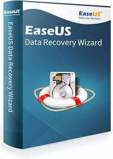
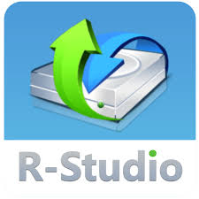
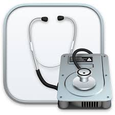
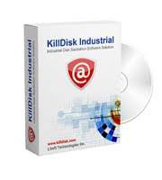

New Software Tools for Data Recovery and Destruction

Description: EaseUS data recovery wizard is a powerful software that helps recover lost, deleted or formatted files from hard drives, USB drives, memory cards and other storage devices. It offers quick and deep scanning modes, supports various file systems and allows users to preview files before recovery on both windows and mac.
Price: $30.00

Description: R-Studio is a professional data recovery software designed for retrieving lost or deleted files from various storage devices, SSDs, RAID arrays and USB drives. It supports advanced recovery features like deep scanning, network data recovery and RAID reconstruction, making it a preferred choice for IT professionals and data recovery specialists .
Price: $50.00

Description: Mac Disk Utilioty is a built-in macOS tool for managing and troubleshooting storage devices including internal drives, external drives and disk images. it allows users to format, partition, repair and erase disks as well as check drive health using first aid to fix disk errors .
Price: $70.00

Description: Killdisk is a secure data erasure software designed to permanently delete data from hard drives, SSDs and other storage devices. it uses advanced wiping algorithms to ensure data is unrecoverable, making it ideal for secure disposal or repurposing of storage media .